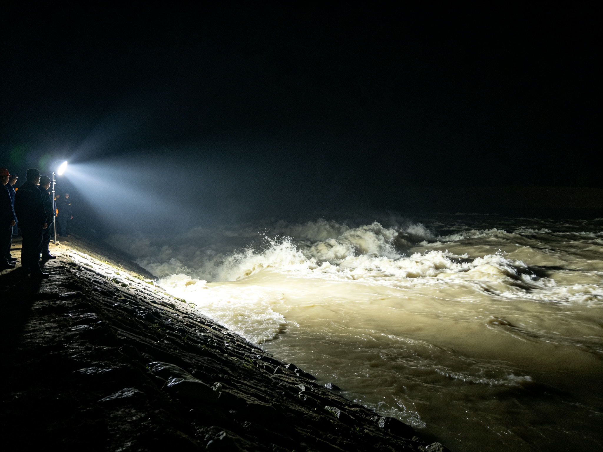

决口夜照片
A-01 · 决口夜现场 · 冲洗日期章 98.7.21 03:02

DSC_1998_0721_0228.JPG · 原图
三人站在探照灯下，身后是浑浊的江水。照片背面冲洗店的日期章是 03:02——比日志"02:30 决口"晚半小时，比"03:00 组织转移"晚两分钟。
按下快门的人说："我本想喊他们撤，可一抬头，灯灭了。再亮，人就没了。"
我把照片扫描后放大到 400%。三个人站在光里，影子往岸上倒。决口夜录音——录音带里，周文斌说"我水性好，能漂"。
放大之后，水面上的第四个人影，比三个人都清晰。
而且影子是往水里倒的。
——光从堤上来，影子该往江里去。可那三个人不是。只有水里的那一个，影子方向是对的。
放大之后我才注意到，水面上那个影子倒的方向不对。同一盒里还有一卷声带，登记名是决口夜录音；衣上的编号另收一处，登记名是救生衣编号。